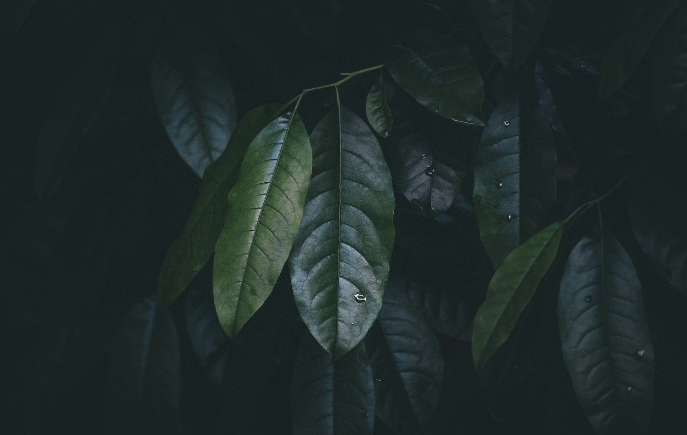

We drove down to Deir Alla before dawn to watch Damask rose being picked.

By Reem Khalil · 6 May 2025
Damask roses are picked in the first two hours after sunrise, before the heat drives the oils out of the petals. So we left Amman at 4:15 in the morning.
Abu Fadi's family has grown roses on the same four dunums near Deir Alla for three generations. In the ten days of peak season, six pickers fill cloth sacks with around 250 kilos of flowers every morning.
The petals go straight into a copper still in a shed behind the house. It takes roughly four kilos of petals to make one litre of the rose water we use in the Damask Rose Essence.
We bought this year's full batch, 180 litres, which covers the essence and the toner until next spring. We tasted the first run of the still at 7 am, standing in the shed.